許せない掃除機と進まないフォトブック [梅吉]
ことしもぼちぼち衣替えを始めています。
もちろん梅吉さんはしっかり手伝ってくれていますよ＾＾
渾身のお手伝いの様子でーす。
（31秒 音無です）
・・・・・(⌒-⌒;
圧出袋から空気を抜く掃除機がどうしても許せない様子。
掃除機のモーター音が入っている方が雰囲気あるんですが
私のケタケタ笑いも入っているので音を消しました。
掃除機に体を吸われても臆することなくアタックしてくる根性は褒めてあげたいwww
･゜ﾟ･*:.｡..｡.:*･゜ﾟ･*:.｡. .｡.:*･゜ﾟ･*･゜ﾟ･*:.｡..｡.:*･゜ﾟ･*:.｡..｡.:*･゜ﾟ･*
昨年末にフォトブックは4月下旬（梅吉の推定誕生日）までに作ると記事にしていたのですが・・・
現在ぜーんぜん作業が進んでおりませんw
今月中はもう諦めて梅吉のうちの子記念日（7月下旬）に期限を延長。
これはどうしても守らねば！
毎年一番悩むのが表紙の写真です。
今の所候補は

カーテンからひょっこり（これで「ひょっこりはん」という芸人さんの存在を知りました）
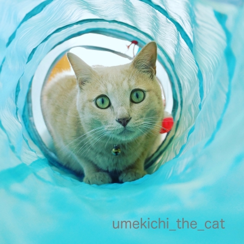
ニャン生初のキャットトンネル
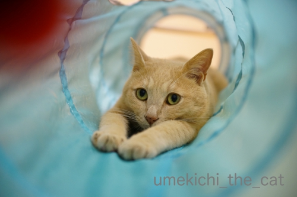
ウォータースライダー風

ねこくまちゃん（やさぐれ感あり）

ハロウィンの魔女さん（ゴージャスでしょ）
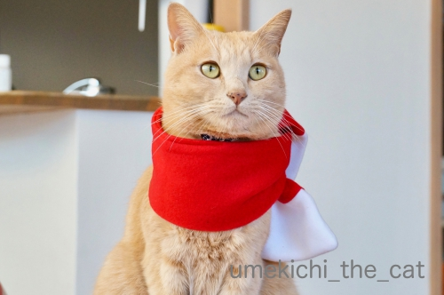
赤いマフラー（きりりっ）
あたりなんですが、悩むー！！
このところ時間ができると写真ライブラリーとにらめっこの日々です。
お返事書けないのはこのせいもあるのです・・・
どうぞお許しくださいませm(_ _)m
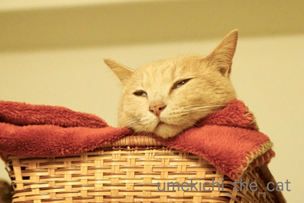
アルバムの中には変顔や白目写真は欠かせませんよ(*>艸<)
 ↑ガブッと一押し↑
↑ガブッと一押し↑
もちろん梅吉さんはしっかり手伝ってくれていますよ＾＾
渾身のお手伝いの様子でーす。
（31秒 音無です）
・・・・・(⌒-⌒;
圧出袋から空気を抜く掃除機がどうしても許せない様子。
掃除機のモーター音が入っている方が雰囲気あるんですが
私のケタケタ笑いも入っているので音を消しました。
掃除機に体を吸われても臆することなくアタックしてくる根性は褒めてあげたいwww
･゜ﾟ･*:.｡..｡.:*･゜ﾟ･*:.｡. .｡.:*･゜ﾟ･*･゜ﾟ･*:.｡..｡.:*･゜ﾟ･*:.｡..｡.:*･゜ﾟ･*
昨年末にフォトブックは4月下旬（梅吉の推定誕生日）までに作ると記事にしていたのですが・・・
現在ぜーんぜん作業が進んでおりませんw
今月中はもう諦めて梅吉のうちの子記念日（7月下旬）に期限を延長。
これはどうしても守らねば！
毎年一番悩むのが表紙の写真です。
今の所候補は
カーテンからひょっこり（これで「ひょっこりはん」という芸人さんの存在を知りました）
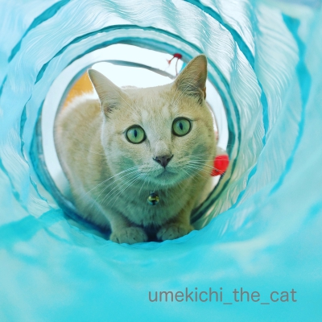
ニャン生初のキャットトンネル
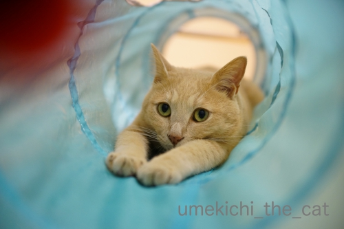
ウォータースライダー風
ねこくまちゃん（やさぐれ感あり）
ハロウィンの魔女さん（ゴージャスでしょ）
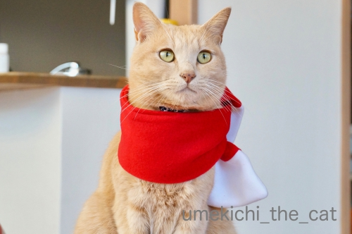
赤いマフラー（きりりっ）
あたりなんですが、悩むー！！
このところ時間ができると写真ライブラリーとにらめっこの日々です。
お返事書けないのはこのせいもあるのです・・・
どうぞお許しくださいませm(_ _)m
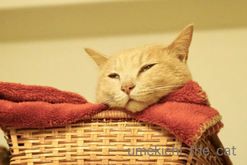
アルバムの中には変顔や白目写真は欠かせませんよ(*>艸<)
ネイルケアが出来ません（自慢？） [梅吉]
梅吉の（私の）ネイルケア好きは相変わらずです。

爪を磨く時が興奮度MAX！

そんなにおかーさんに絡みたいですかー0(≧▽≦)0
（ケア用品をがぶがぶしたくてたまらないからだと思うけど(⌒-⌒;）
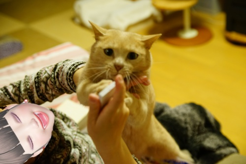
ケア用品、噛み心地は発泡スチロールみたいな感じ？
歯が「ぷす」っと刺さる様な。
かじっても良いんですけど口にグイグイ押し込むので
飲み込むんじゃないかと気が気じゃなくて・・・。
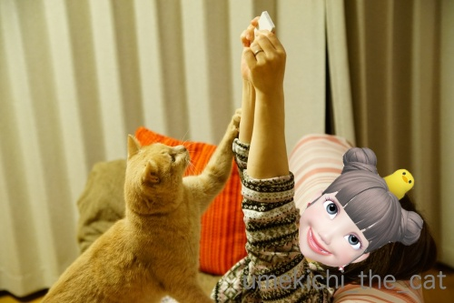
こんな状態なのでこの日もケアは中途半端。
リビングから遠い部屋で寝ているな、と思って
ケア用品を出して振り向くと梅吉がいます (-_-メ)
カリカリを保管しているクローゼットの扉を開けた時よりも早くやってきますよw
おっとが爪を切ろうとしても無反応。
（おっとは爪磨かないせいもありますけど）
私の時だけ飛んでくるんですよ。ふふふ(ΦωΦ)
でもちゃんとケアもしたいなー。

なにかと「絡んで来たい子」ちゃん。
あごニキビはかなりキレイになってきました！
化膿したりしなければ放っておくのが一番な様ですね。
寝る前のあごぽんぽん（消毒）は2日に一回くらいにしています。
 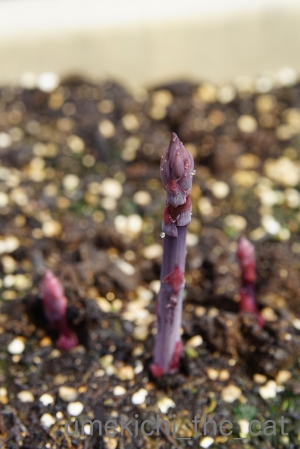
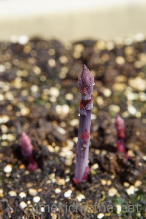
すっかり話題にしそびれていたプランターのアスパラ栽培。
上の写真は先月、3月23日に撮影したものです。
過去記事を調べてみたら2017年春に初めて収穫してます。
昨年で株が育ったのか今年はそれなりの太さものもの収穫出来てます。
採りたてを薄く斜め切りにして生のままにオリーブオイルと塩胡椒で食べるのが美味しいです＾＾

今週末のプランターはこんな感じ。
びよーんと伸びているのはこのまま伸ばしておきます。
収穫はGWの終わり頃くらいまでかな。
↑ガブッと一押し↑
爪を磨く時が興奮度MAX！
そんなにおかーさんに絡みたいですかー0(≧▽≦)0
（ケア用品をがぶがぶしたくてたまらないからだと思うけど(⌒-⌒;）
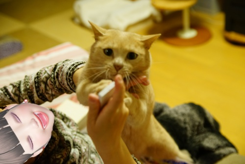
ケア用品、噛み心地は発泡スチロールみたいな感じ？
歯が「ぷす」っと刺さる様な。
かじっても良いんですけど口にグイグイ押し込むので
飲み込むんじゃないかと気が気じゃなくて・・・。
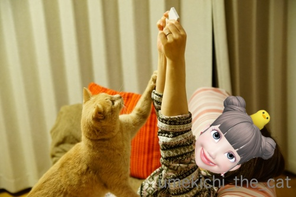
こんな状態なのでこの日もケアは中途半端。
リビングから遠い部屋で寝ているな、と思って
ケア用品を出して振り向くと梅吉がいます (-_-メ)
カリカリを保管しているクローゼットの扉を開けた時よりも早くやってきますよw
おっとが爪を切ろうとしても無反応。
（おっとは爪磨かないせいもありますけど）
私の時だけ飛んでくるんですよ。ふふふ(ΦωΦ)
でもちゃんとケアもしたいなー。
なにかと「絡んで来たい子」ちゃん。
あごニキビはかなりキレイになってきました！
化膿したりしなければ放っておくのが一番な様ですね。
寝る前のあごぽんぽん（消毒）は2日に一回くらいにしています。
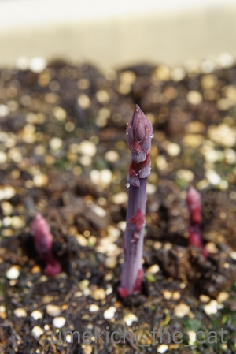すっかり話題にしそびれていたプランターのアスパラ栽培。
上の写真は先月、3月23日に撮影したものです。
過去記事を調べてみたら2017年春に初めて収穫してます。
昨年で株が育ったのか今年はそれなりの太さものもの収穫出来てます。
採りたてを薄く斜め切りにして生のままにオリーブオイルと塩胡椒で食べるのが美味しいです＾＾
今週末のプランターはこんな感じ。
びよーんと伸びているのはこのまま伸ばしておきます。
収穫はGWの終わり頃くらいまでかな。
猫型のし袋 [梅吉]
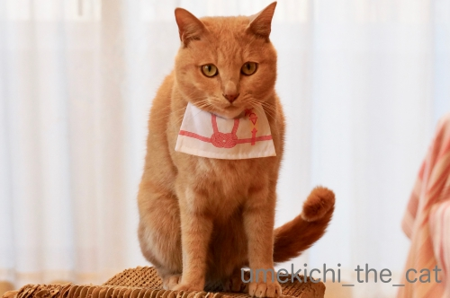
大容量の猫型のし袋です＾＾

お腹部分のチャックを開けて「お気持ち」を入れてくださいね。

のし袋さんのご機嫌によってはチャックを開けることが難しいかもしれませんw
がぶっと来るかもしれないのでご使用は自己責任でお願いします(*>艸<)

![[猫]](https://blog.ss-blog.jp/_images_e/101.gif) あほくさ・・・・・
あほくさ・・・・・
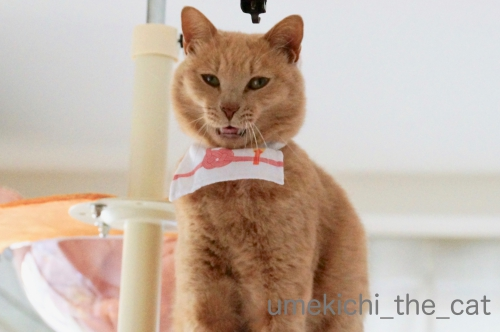
のし袋さん、キャットタワーの上に行っちゃいました。
と、あくびですねー！
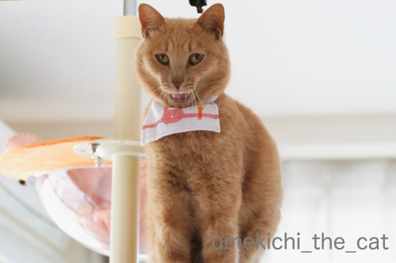
それ、あくび顔？ (＠◇＠)
変顔、いただきました！
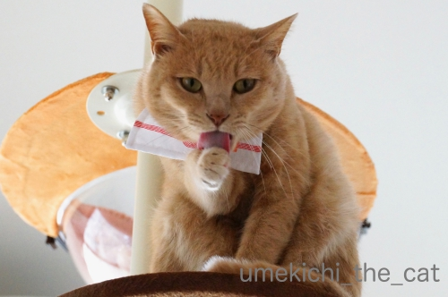
のし袋さん、お疲れ様でしたー。
〜ちらっと見てください！じっと見ちゃダメ！！〜
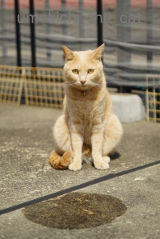
空中浮遊する梅吉・・・・に見えますか？
難しいかなぁ・・・
コンクリートの継ぎ目が入っているのが敗因かなw
大きめ画像だとボロが出るので小さい画像にしています。
↑ガブッと一押し↑
大容量の猫型のし袋です＾＾
お腹部分のチャックを開けて「お気持ち」を入れてくださいね。
のし袋さんのご機嫌によってはチャックを開けることが難しいかもしれませんw
がぶっと来るかもしれないのでご使用は自己責任でお願いします(*>艸<)
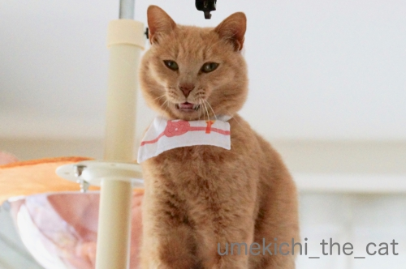
のし袋さん、キャットタワーの上に行っちゃいました。
と、あくびですねー！
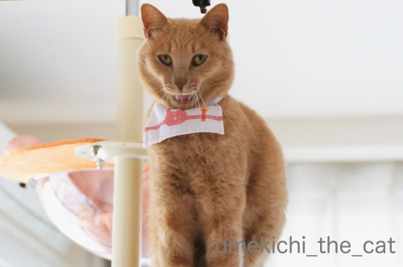
それ、あくび顔？ (＠◇＠)
変顔、いただきました！
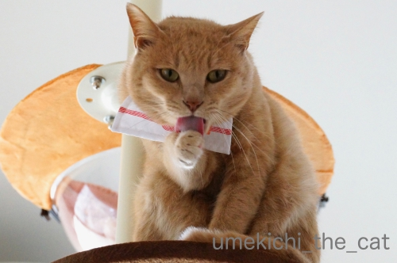
のし袋さん、お疲れ様でしたー。
〜ちらっと見てください！じっと見ちゃダメ！！〜
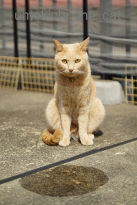
空中浮遊する梅吉・・・・に見えますか？
難しいかなぁ・・・
コンクリートの継ぎ目が入っているのが敗因かなw
大きめ画像だとボロが出るので小さい画像にしています。
見えないところがあるのが楽しい♪ [梅吉]

クリアハンモックには入ったり入らなかったりを繰り返しております。
この日は寝ようと横になったらブランケットが大幅にずれちゃった様です。
本ニャンは全く気にしてないようですがw

全身ではありませんがよく見えます！
（ボールが光っちゃってますね・・・）
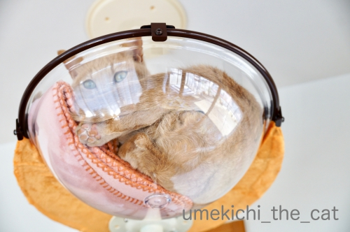
うぉぉぉぉぉぉ〜0(≧▽≦)0
良いではないですか！お手手まで見えてると完璧なんだけど・・・
と伸び代的なところがあるのが余計に良い感じ？
今後に期待が膨らみます。
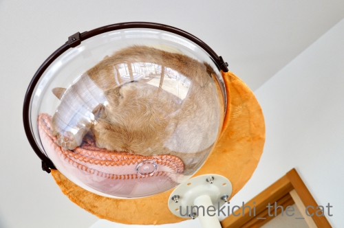
毛がうねうねっとなっているだけでも興奮しちゃいますよ(*>艸<)
ここで香箱を組んでもらうのが目標ですが
おちりを押し付けて座ってそれが「むぎゅっ♡」と見えたりしたら・・・
そんなこんな様々のシチュエーションを想像して猫変態はひとりニヤニヤするのでした0(≧▽≦)0

こんなふうにステップに座ってくつろぐ様にもなりました＾＾
･゜ﾟ･*:.｡..｡.:*･゜ﾟ･*:.｡. .｡.:*･゜ﾟ･*･゜ﾟ･*:.｡..｡.:*･゜ﾟ･*:.｡..｡.:*･゜ﾟ･*

みなさまご存知新元号「令和」発表の瞬間。
あの瞬間が菅官房長官とクラプトンのコラボに！！
おっとが教えてくれましたよ。
菅さんが淡々としてるのが余計に笑えますwww
奇跡の瞬間、是非是非音を出してご覧ください＾＾
蛇足かと思いますが・・・
この曲はEric Claptonの名曲『Layla』（レイラ）です。
「れいわ」では無いのですよ(*>艸<)
お手手とおシッポの扱い方 [梅吉]
皆さま、風邪へのお気遣いのコメントありがとうございましたm(_ _)m
めきめき回復をしてもうすっかり大丈夫です！
冷たい空気に咳き込んだりはしますが暖かくなったらそれも無くなるでしょう＾＾

寝ている時やちゅうちゅう時にお手手を伸ばしていることが多いですが
日向ぼっこ中もお手手が伸びちゃいますよ＾＾

暑くなってきたでしょ(*>艸<)

フローリングでクールダウン。
びろ〜ん。
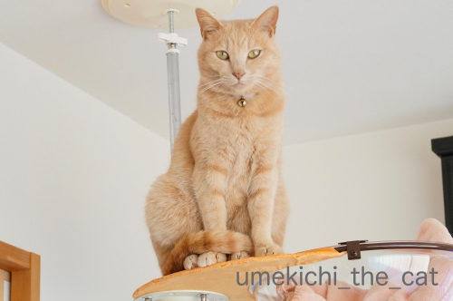
お手手は開放的な梅吉さんですがおしっぽはの扱いは几帳面。
前足の上にきちっと乗せるんですよ(≧▽≦)
先っぽをくるりと丸めるのがチャームポイント？

前足に載せていない時もだらりと垂らさず形をキメてます！
くいっと曲げた形、ハンガーでもかけてみようかと思ったらパンチされましたwww
いつもきちんとおしっぽを扱っているせいでしょうか
人間に踏まれて「ぎゃ！」ということは我が家では滅多にありません。
そのかわり歩く人間の足にスリスリアタックしてくるので
前足を踏まれて「ぎゃー！」ということは良くあります。
気分が乗っている時は（爆）「ぎゃー！」と鳴きながらおっとの足の前に体を投げ出して
踏まれてないのに「ふんだやろ！しかえしや！！」とガブガブしてます(⌒-⌒;
当たり屋かwww
↑ガブッと一押し↑
めきめき回復をしてもうすっかり大丈夫です！
冷たい空気に咳き込んだりはしますが暖かくなったらそれも無くなるでしょう＾＾
寝ている時やちゅうちゅう時にお手手を伸ばしていることが多いですが
日向ぼっこ中もお手手が伸びちゃいますよ＾＾
暑くなってきたでしょ(*>艸<)
フローリングでクールダウン。
びろ〜ん。
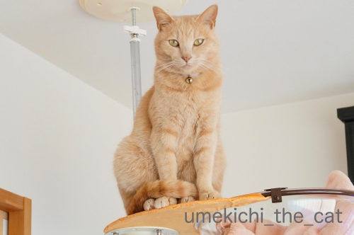
お手手は開放的な梅吉さんですがおしっぽはの扱いは几帳面。
前足の上にきちっと乗せるんですよ(≧▽≦)
先っぽをくるりと丸めるのがチャームポイント？
前足に載せていない時もだらりと垂らさず形をキメてます！
くいっと曲げた形、ハンガーでもかけてみようかと思ったらパンチされましたwww
いつもきちんとおしっぽを扱っているせいでしょうか
人間に踏まれて「ぎゃ！」ということは我が家では滅多にありません。
そのかわり歩く人間の足にスリスリアタックしてくるので
前足を踏まれて「ぎゃー！」ということは良くあります。
気分が乗っている時は（爆）「ぎゃー！」と鳴きながらおっとの足の前に体を投げ出して
踏まれてないのに「ふんだやろ！しかえしや！！」とガブガブしてます(⌒-⌒;
当たり屋かwww
クリアハンモック、練習中！ [梅吉]
クリアハンモックにいまいち興味を持ってくれないのでブランケットを敷いてみました。
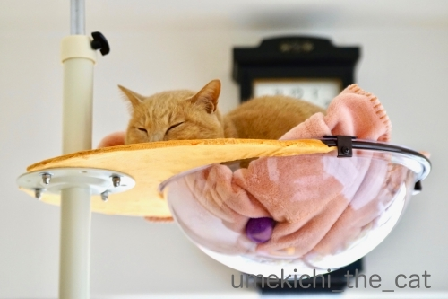
そうしたらあっさりIN！
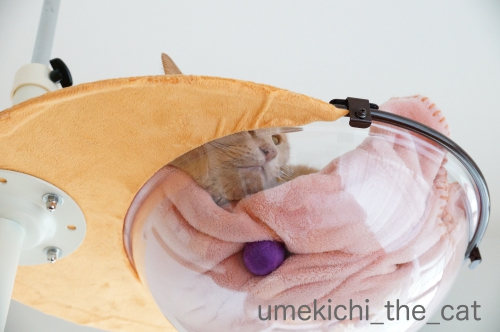
むぎゅっとなって可愛いのは肉球だけではありません。

お顔もむぎゅ〜っ♡
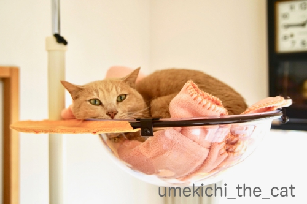
わる ないで
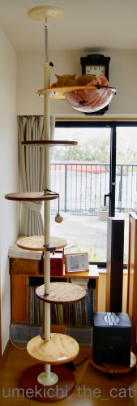
ボウルが冷やっこい、
透明で下が見える事に抵抗がある云々・・・
梅吉がクリアハンモックに入らなかった理由はわかりませんが
こうやって徐々に慣らしていって
ここは安全で快適な「わしの巣」と思ってもらえると良いかなって。
ブランケットは小さく折りたたんで下が見える面積を大きくしたり
日々工夫をしております。
3日ほど経ちますが自分からハンモックに寝に行く様になってます。
全身むぎゅ〜の見られる日もそう遠くなさそう0(≧▽≦)0
私事ですが、今シーズン二回目の風邪っぴき中です。
今回は熱と咳。
一昨日は「なんかしんどい」と思ったら熱が38℃もありました(-_-メ)
若い頃は熱には強くて38℃くらいでもケラケラ笑いながら
（変にテンション高くw）遊んでたんですが
お年頃なんでしょうね〜。本気にしんどかったですw
今は熱も下がって咳が出るのみの回復期ですよ(๑˃̵ᴗ˂̵)و
今週末はそんな事情で皆様へのご訪問失礼しておりました。
月曜からまた遊びに伺いますねー。

2019年3月25日、
ChatBleuさんのブログ青い猫の日記が目出度く100,000nice!を達成！！
その映えある100,000番目のnice!をなんとー！私が踏ませていだたきました。
くじとか懸賞にはめっぽう弱いのですが今年は他にも良いことありそうな予感(≧▽≦)
記念のカードをいただきましたよ。ありがとうございます！
↑ガブッと一押し↑
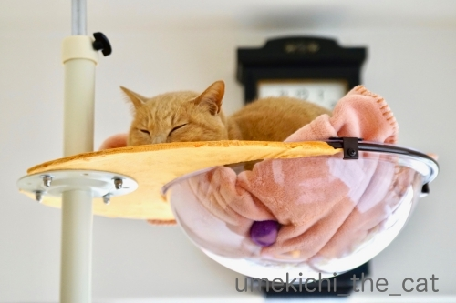
そうしたらあっさりIN！
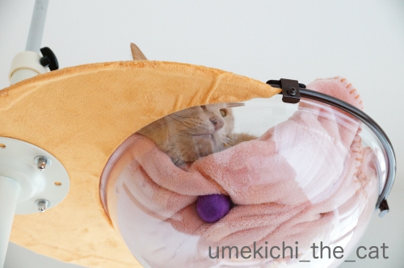
むぎゅっとなって可愛いのは肉球だけではありません。
お顔もむぎゅ〜っ♡
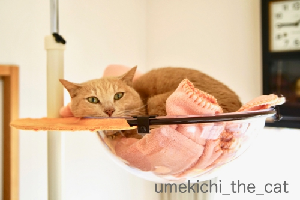
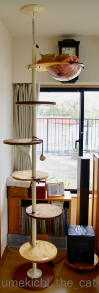
ボウルが冷やっこい、
透明で下が見える事に抵抗がある云々・・・
梅吉がクリアハンモックに入らなかった理由はわかりませんが
こうやって徐々に慣らしていって
ここは安全で快適な「わしの巣」と思ってもらえると良いかなって。
ブランケットは小さく折りたたんで下が見える面積を大きくしたり
日々工夫をしております。
3日ほど経ちますが自分からハンモックに寝に行く様になってます。
全身むぎゅ〜の見られる日もそう遠くなさそう0(≧▽≦)0
私事ですが、今シーズン二回目の風邪っぴき中です。
今回は熱と咳。
一昨日は「なんかしんどい」と思ったら熱が38℃もありました(-_-メ)
若い頃は熱には強くて38℃くらいでもケラケラ笑いながら
（変にテンション高くw）遊んでたんですが
お年頃なんでしょうね〜。本気にしんどかったですw
今は熱も下がって咳が出るのみの回復期ですよ(๑˃̵ᴗ˂̵)و
今週末はそんな事情で皆様へのご訪問失礼しておりました。
月曜からまた遊びに伺いますねー。
2019年3月25日、
ChatBleuさんのブログ青い猫の日記が目出度く100,000nice!を達成！！
その映えある100,000番目のnice!をなんとー！私が踏ませていだたきました。
くじとか懸賞にはめっぽう弱いのですが今年は他にも良いことありそうな予感(≧▽≦)
記念のカードをいただきましたよ。ありがとうございます！
むぎゅ〜〜〜〜っ [梅吉]
クリアハンモックを覗き込む梅吉さん。
興味を持ってもらえる様にレジ袋の丸めたの（大好き）
おもちゃのマタタビクッキーなど入れてみました。

クリアハンモックから下がっているのはデフォルトのおもちゃ。
興味を持ったのは１〜2日だけだったので写真撮影のためにも取っちゃおうかしら・・・

ていっ

真下でカメラを構える下僕の観察も怠りません＾＾

大きく身を乗り出して

がぶ〜っ。
良いお顔ですねー0(≧▽≦)0
っと、ここでバランスを崩して

肉球、肉球！にくきゅーーーーーうぅぅぅ！！！
・・・・・でも、ちょっとわかりにくい写真ですよね。
引っ張った割にはむぎゅっとした肉球写真はこれしか撮れてませんw
申し訳ないです。
と、ここまでが予定稿だったのですが・・・
一昨日夜、梅吉は高いところが好きだからハンモックをてっぺんに付け替えよう！
そうすればもっと積極的に入るかも、とおっとが手直ししてくれました。
ステップも登りやすい様に位置を変えたり。
更にささみとマタタビ粉をまぶした羊毛ボールで梅吉を誘導。
（デフォルトのおもちゃは取り外しました）

来たっ！

0(≧▽≦)0ヾ(*ΦωΦ)ﾉ(๑˃̵ᴗ˂̵)و (｣ﾟﾛﾟ)｣ (*>艸<)

この写真はむぎゅっとした肉球は写ってませんがポーズ可愛かったから採用w

拡大します。
_batch.jpg)
むぎゅ〜〜〜〜〜〜〜っ♡
いかがでしょうか。
ハンモックに入ることに抵抗はない様なのでこの先もきっと色々な姿を見せてくれるはず＾＾
後はどうやったらうまく肉球を写す事が出来るか、飼い主の試行錯誤になりそうです。

降りる時はこんな風に垂直になって上手におりてきます。
ステップの上段でまどろっこしくなって飛び降りるか、と思いましたが
意外や意外、ちゃんと下までステップを使って降りてきます。
怪我する心配が少し減りました＾＾
↑ガブッと一押し↑
興味を持ってもらえる様にレジ袋の丸めたの（大好き）
おもちゃのマタタビクッキーなど入れてみました。

クリアハンモックから下がっているのはデフォルトのおもちゃ。
興味を持ったのは１〜2日だけだったので写真撮影のためにも取っちゃおうかしら・・・

ていっ

真下でカメラを構える下僕の観察も怠りません＾＾

大きく身を乗り出して

がぶ〜っ。
良いお顔ですねー0(≧▽≦)0
っと、ここでバランスを崩して

肉球、肉球！にくきゅーーーーーうぅぅぅ！！！
・・・・・でも、ちょっとわかりにくい写真ですよね。
引っ張った割にはむぎゅっとした肉球写真はこれしか撮れてませんw
申し訳ないです。
と、ここまでが予定稿だったのですが・・・
一昨日夜、梅吉は高いところが好きだからハンモックをてっぺんに付け替えよう！
そうすればもっと積極的に入るかも、とおっとが手直ししてくれました。
ステップも登りやすい様に位置を変えたり。
更にささみとマタタビ粉をまぶした羊毛ボールで梅吉を誘導。
（デフォルトのおもちゃは取り外しました）

来たっ！

0(≧▽≦)0ヾ(*ΦωΦ)ﾉ(๑˃̵ᴗ˂̵)و (｣ﾟﾛﾟ)｣ (*>艸<)

この写真はむぎゅっとした肉球は写ってませんがポーズ可愛かったから採用w

拡大します。
_batch.jpg)
むぎゅ〜〜〜〜〜〜〜っ♡
いかがでしょうか。
ハンモックに入ることに抵抗はない様なのでこの先もきっと色々な姿を見せてくれるはず＾＾
後はどうやったらうまく肉球を写す事が出来るか、飼い主の試行錯誤になりそうです。

降りる時はこんな風に垂直になって上手におりてきます。
ステップの上段でまどろっこしくなって飛び降りるか、と思いましたが
意外や意外、ちゃんと下までステップを使って降りてきます。
怪我する心配が少し減りました＾＾
にゃん生における大きな一歩 [梅吉]
さてさて、キャットタワーを初めて見た梅吉さん。
組み立てている途中から登ったりして大変かな、と思ったのですが
彼ももうすぐ４ちゃい。
それなりの分別がついたのか組み立てている間はおとなしく見守ってくれました＾＾

設置が終わると新しもの好きな梅吉さんはすぐに食いつきますよw

おおおお〜！記念すべきキャットタワーへのファーストステップ。
後ろあちの勢いをお楽しみください＾＾

おもちゃにもすぐに反応。とりあえず試してみなくちゃね！

常に高みを目指す漢、梅吉。
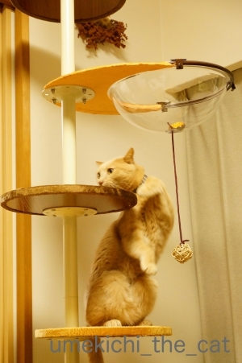
うまいこと体をひねって

登って行きます(≧▽≦)
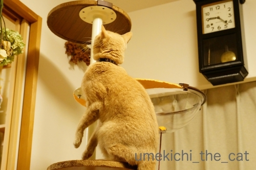
いきなりてっぺんを目指すのか！と思ったら

余裕のあくびです(⌒-⌒;
じらすんだから、もう〜！

クリアハンモックのステップに！

不思議そうにのぞいていますよ。
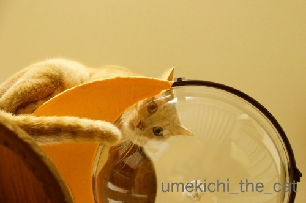
きた、きた、キターッ♪───Ｏ（≧∇≦）Ｏ────♪
このアングルがたまりません・・・
続きます。引っ張りますよ(*>艸<)
このクリアハンモック、ウワサには聞いてましたが
写真を撮っている姿から家の中が全部映り混んじゃうのが難点です(-_-メ)
梅吉、ポイント活動の成果 [梅吉]
大きな段ボール箱が届いて大興奮の梅吉さん。

細長い箱は新鮮ですか？

中の物を出し始めると興奮度アップ！
ガサガサ音を聞いていると気持ちが高まってくるんでしょうか。

ねらって・・・

ばびゅっと(≧▽≦)
（臨場感を重視しております）

これはー！

なんやーー！！
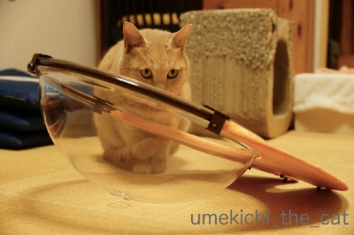
なんなんやーーー！！！

組み立てるおっとと

それを見守る梅吉。
キャットタワー、クリアハンモック付きを買いました！
正確には某サイトで溜まっていたポイントでゲットしました＾＾
更にいうならば
『梅吉が毎朝の添い寝＆お膝活動＆猫見風呂で貯めたおとーさんポイントでゲットした』
だそうです(*>艸<)
旅行に使う、普段買わないようなお酒を買う、ふるさと納税に使う
（ポイントをふるさと納税に使用出来るんですね。納税した分は還付されるので
これが一番割りの良い使い方かもしれません）
など話が出たのですが梅吉用品に化けましたw
このタワー、リュカさんちのと全く同じなの＾＾
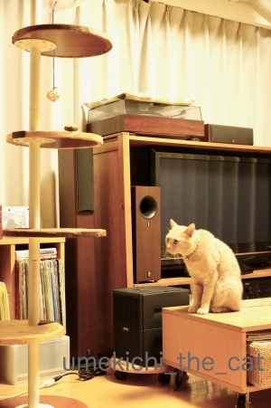
さ！出来ましたよ。
さてさて梅吉の反応はいかに！？続きます＾＾
その同じタワーを持つリュカさんが旅の途中大阪に寄ってくれました。
くつしたにゃんさんと３人で集合！

コロル二世くんとくつしたにゃんさんのにゃんこの化身達。

昼間っから泡だ赤だ白だと飲みましたよ＾＾
酔っ払ってもちゃんと新幹線に乗れるように（爆）
新大阪駅直結の駅ビルアルデ新大阪に行ったのですがここ便利です！
平日昼過ぎでしたが並んでいるお店もありました。利用客、多いみたい。
どっしり腰を落ち着けて飲んで喋る気満々だったので
パシオン・エ・ナチュールというワインのお店に席を予約。
一年分くらい喋って楽しかったー！
東京？大阪？どっちかでまた会おうね0(≧▽≦)0
↑ガブッと一押し↑

細長い箱は新鮮ですか？

中の物を出し始めると興奮度アップ！
ガサガサ音を聞いていると気持ちが高まってくるんでしょうか。

ねらって・・・

ばびゅっと(≧▽≦)
（臨場感を重視しております）

これはー！

なんやーー！！
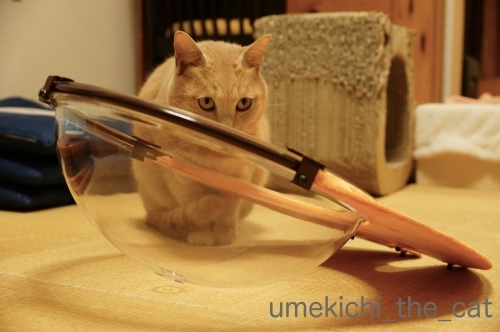
なんなんやーーー！！！

組み立てるおっとと

それを見守る梅吉。
キャットタワー、クリアハンモック付きを買いました！
正確には某サイトで溜まっていたポイントでゲットしました＾＾
更にいうならば
『梅吉が毎朝の添い寝＆お膝活動＆猫見風呂で貯めたおとーさんポイントでゲットした』
だそうです(*>艸<)
旅行に使う、普段買わないようなお酒を買う、ふるさと納税に使う
（ポイントをふるさと納税に使用出来るんですね。納税した分は還付されるので
これが一番割りの良い使い方かもしれません）
など話が出たのですが梅吉用品に化けましたw
このタワー、リュカさんちのと全く同じなの＾＾
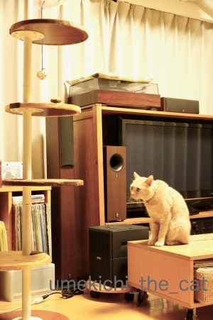
さ！出来ましたよ。
さてさて梅吉の反応はいかに！？続きます＾＾
その同じタワーを持つリュカさんが旅の途中大阪に寄ってくれました。
くつしたにゃんさんと３人で集合！

コロル二世くんとくつしたにゃんさんのにゃんこの化身達。

昼間っから泡だ赤だ白だと飲みましたよ＾＾
酔っ払ってもちゃんと新幹線に乗れるように（爆）
新大阪駅直結の駅ビルアルデ新大阪に行ったのですがここ便利です！
平日昼過ぎでしたが並んでいるお店もありました。利用客、多いみたい。
どっしり腰を落ち着けて飲んで喋る気満々だったので
パシオン・エ・ナチュールというワインのお店に席を予約。
一年分くらい喋って楽しかったー！
東京？大阪？どっちかでまた会おうね0(≧▽≦)0
お手手とお顔の使い方 [梅吉]
〜本日、月曜日はお出かけして来ます。みな様のブログへは火曜日から遊びに伺いますね＾＾〜

行き倒れっぽくも見えますが幸せ「ちゅうちゅう」タイムです。

お手手がびよ〜んって伸びてきちゃうんですよね＾＾

こんな格好のまま寝ちゃうんですよ。
このお手手は器用でもあります。
（18秒。音無しです＾＾）
手も器用だけど顔も器用かも、ですねwww
〜真面目な健康のお話〜
（結果は全く問題なし、だったので安心してお読みください）
堀ちえみさん舌がんのニュース。ご記憶の方も多いと思います。
ニュースを聞いた時ちょうど私も舌の付け根から舌の側面にかけてちょっとした違和感がありました。
口内炎も出来やすいので気になってかかりつけの歯科の医師に相談すると
紹介状を書くので大きな病院へ行ってくださいとのこと。
（この時点で99%問題はないとの見立てだったのですが専門医から太鼓判もらって、と）
で、総合病院の口腔外科を受診しました。
口腔外科で看護師の問診でも医師にもしつこく聞かれたのが
「食べ物が飲み込み難いかどうか？」でした。
舌がんは「飲み込み難い」症状がキーワードの様です。
（加齢による嚥下力の低下、咽頭がんそのものの可能性もありますが）
食事の時の違和感は全くなかったのでこの点はクリア。
気になる舌の違和感は腫瘍などが出来ていると部分的に硬くなったりするようなんですが
触診でもその症状は全くなし。
むしろとっても健康な口内状況ですと褒められました。
時々感じる違和感は扁桃腺にちょっとした異常があると
その影響が舌にも出ると思われますとの事でした。
思えば風邪っぽい時や頭の痛い時に舌の違和感があったかも。やれやれ。
心配はしてなかったのですがやっぱり診てもらって良かったです。
歯科でも口腔外科でもそうだったのですが
口の中の診察では舌を前に右に左に引っ張られて舌の付け根等をぐいぐい指で押されるので
「ぐえっ」となるし結構辛いです。
もし受診される方がいらっしゃったら覚悟して行ってくださいね。
舌を前に右に左に引っ張られた経験の持ち主はそんなにいなかろう、と記事にしてみました。
↑ガブッと一押し↑

行き倒れっぽくも見えますが幸せ「ちゅうちゅう」タイムです。

お手手がびよ〜んって伸びてきちゃうんですよね＾＾

こんな格好のまま寝ちゃうんですよ。
このお手手は器用でもあります。
（18秒。音無しです＾＾）
手も器用だけど顔も器用かも、ですねwww
〜真面目な健康のお話〜
（結果は全く問題なし、だったので安心してお読みください）
堀ちえみさん舌がんのニュース。ご記憶の方も多いと思います。
ニュースを聞いた時ちょうど私も舌の付け根から舌の側面にかけてちょっとした違和感がありました。
口内炎も出来やすいので気になってかかりつけの歯科の医師に相談すると
紹介状を書くので大きな病院へ行ってくださいとのこと。
（この時点で99%問題はないとの見立てだったのですが専門医から太鼓判もらって、と）
で、総合病院の口腔外科を受診しました。
口腔外科で看護師の問診でも医師にもしつこく聞かれたのが
「食べ物が飲み込み難いかどうか？」でした。
舌がんは「飲み込み難い」症状がキーワードの様です。
（加齢による嚥下力の低下、咽頭がんそのものの可能性もありますが）
食事の時の違和感は全くなかったのでこの点はクリア。
気になる舌の違和感は腫瘍などが出来ていると部分的に硬くなったりするようなんですが
触診でもその症状は全くなし。
むしろとっても健康な口内状況ですと褒められました。
時々感じる違和感は扁桃腺にちょっとした異常があると
その影響が舌にも出ると思われますとの事でした。
思えば風邪っぽい時や頭の痛い時に舌の違和感があったかも。やれやれ。
心配はしてなかったのですがやっぱり診てもらって良かったです。
歯科でも口腔外科でもそうだったのですが
口の中の診察では舌を前に右に左に引っ張られて舌の付け根等をぐいぐい指で押されるので
「ぐえっ」となるし結構辛いです。
もし受診される方がいらっしゃったら覚悟して行ってくださいね。
舌を前に右に左に引っ張られた経験の持ち主はそんなにいなかろう、と記事にしてみました。

カフェオレ色の梅吉

梅吉 2023年8月10日 永眠


梅吉と出会った譲渡会

犬猫の理由なき殺処分ゼロ
妄想広告
UMEKICHI 光

爆発的に早い！
時々攻撃的！
Thanks to Mr.Boss365
爆発的に早い！
時々攻撃的！
Thanks to Mr.Boss365